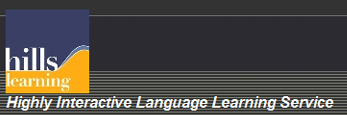
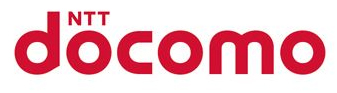

Sponsors
This whole event is possible only because of the generous help offered to us by the following organizations. These organizations are not just generous to us, but are generous to any who are looking for resources into Japan or Japanese related activites in New York City. So please, check our their website and their activities!
-
Ajinomoto
-
American Airlines
-
Amnet

-
Book Culture
-
Book Off
-
Consulate General of Japan in New York
-
Hills Learning
 -
Ito En

-
Ivy League Stationers
-
Japan National Tourism Organization
-
JTB Travel
-
Kikkoman
-
M2M
-
Mainichi Communications USA
-
Mills Korean
-
NTT Docomo
 -
University Houseware and Hardware
-
Wuhao New York

We would also like to thank
Go Go Curry, Hakata TONTON, Kiteya, Magokoro New York, Oms/B, Te plus te, Wuhao New York, and Yamachan Ramen
for coming out to support us and bringing their various Japanese foods/books. Please check out the Vendors page for more info on the vendors at Matsuri 2010.Sponsored [in part] by the Arts Initiative at Columbia University. This funding is made possible through a generous gift from The Gatsby Charitable Foundation.